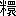

昭和三年七月発行関西考古会の機関雑誌『考古』第三号において、余輩は未熟なる「曲玉考」一篇を発表して管見を学界に問うたことがあった。要はいわゆる曲玉なる名称が、今日の人々の普通に考うるごとく勾形をなす一種の玉のことではなく、本来はいわゆる玉の緒をもって数個の玉を連ねたもの全体の称呼であったというにある。しかしながら、当時材料すこぶる不備であって、その後新たに考え得たところが多く、ことに最近琉球に旅行して、同地の
邦語において普通に「タマ」というところのもの、余輩これにあつべき適当な漢字を知らぬ。古人もまた同様であったと見えて、『古事記』『日本紀』などの古書には、「玉」「珠」「瓊」「
 」などの文字を用い、後世では「丸」「球」などいう文字までが当てられているが、もちろんいずれも十分その意義をあらわし得たものではない。いうまでもなく「」は『古事記』にのみ用いられた文字で、いまだその本義を明かにせぬが、しかしこれまたいずれにしてもわが「タマ」の意をあらわす文字であるとは思われぬ。もしそれ「丸」または「球」などの文字をこれに宛てるに至っては沙汰の限りで、これはただ普通にいわゆる「タマ」の形が丸いがために、会意上からそれを当てたに過ぎぬ。いわゆる飴玉、鉄炮玉、眼球の類で、もちろん古えにいわゆるタマではない。
」などの文字を用い、後世では「丸」「球」などいう文字までが当てられているが、もちろんいずれも十分その意義をあらわし得たものではない。いうまでもなく「」は『古事記』にのみ用いられた文字で、いまだその本義を明かにせぬが、しかしこれまたいずれにしてもわが「タマ」の意をあらわす文字であるとは思われぬ。もしそれ「丸」または「球」などの文字をこれに宛てるに至っては沙汰の限りで、これはただ普通にいわゆる「タマ」の形が丸いがために、会意上からそれを当てたに過ぎぬ。いわゆる飴玉、鉄炮玉、眼球の類で、もちろん古えにいわゆるタマではない。邦語にタマというは、その形状のいかんを問わず、必要条件としては孔を穿って緒を貫き、身体の装飾に用うるに足るべきものでなければならぬ。もちろん装飾としてこれを使用するものであるがために、普通には研磨して、光沢を生ずべき硬質のものを可とし、したがって「玉」あるいは「珠」のごときものは、その材料としては最も適当なものであるには相違ないが、しかしそれは材料であって、タマそのものではない。もちろん真珠を古くシラタマと称した例はあるが、豊玉姫の歌というものに、「赤玉は緒さへ光れど白玉の、君がよそひし貴くありけり」〔（『古事記』上巻）〕とあるによれば、赤玉も、白玉も、ともに緒に貫いて身のよそいとなしたものであった。けだしわがいわゆるタマは、その形からいえば丸玉あり、臼玉あり、切子玉あり、管玉あり、棗玉あり、算盤玉あり、またいわゆる曲玉なるものもあり、その他形状不整の種々の物体までが、いやしくも孔を有して緒を通し、装飾用に供せられるものいずれも皆タマなのである。したがってその材料からいえば、ただに玉、石と、真珠とのみならず、稀には歯牙の類もあり、木蓮子、スス玉、胡桃など、植物の果実、あるいは竹木製の類の物までが、しばしばタマとして用いられるのである。しかもこれらのものを引っくるめて、これに当つべき漢字はない。ここにおいて古人その理想的材料なる「玉」または「珠」の文字をこれに当て、それが普通に用いられるに至ったものだと考えられる。真珠のごときも前引の歌の示すがごとく、古代にあってはいずれも孔を通じて、始めてタマとして用いられたものであったらしい。『魏志』の記したる倭の女王の貢献物中に、「白珠五千孔」とあるものはこれを語っている。決して今日のごとく、指輪やネクタイピンにそのまま嵌入した類のものではなかったはずである。もちろん右に記したごとく、時として孔はなくとも真珠そのものを白玉、また玉などと呼び、『万葉集』〔（巻七）〕に、「底清み、しづける玉を見まく欲り、千度ぞ告りし、かづきする海人」とあるごとき例はある。しかしこれは真珠が玉の理想的材料であることから起った、第二次的意義であろう。
ここにおいてさらに遡って考うるに、本来タマなる名称は、孔を有して緒を通ずべき個々の物体そのもののことではなく、それはむしろ第二次的転用の名辞であって、当初はこれらの多くの個々の物体を、いわゆる「タマの緒」をもって連絡したものの名称であったと考える。古語にかかる連珠を、しばしば
きこゑなかぐすく、たまのみつまはり
まわちへもちへ、あぢおそいにみおやせ
とある「タマノミツマハリ」は、玉の三つ廻りの義で、玉の緒に通した長い連珠の、三廻りもまわるほどのものを称して、タマと言った証拠である。その連珠はすなわちいわゆるまわちへもちへ、あぢおそいにみおやせ
ここにおいてさらに進んでタマの名義を考えてみる。『言海』にタマは「
いわゆるタマが本来個々の有孔物体のことではなく、緒をもって多数にそれを連ねた全体の称であることは、上文すでに説述したところであるが、『古事記』『日本紀』などの古書には、そのいわゆるタマのことをしばしば「勾珠」または「曲玉」と文字に書きあらわし、古訓それを「マガタマ」と読ませているのである。試みにその用例を示さんに、『日本紀』天上誓約の条、および天岩戸の条等に「
」とも、また「八尺勾之五百津之御須麻琉之珠」などとも書いているのである。しかして後世には、三種の神器の場合、八咫鏡、草薙剣に対して、普通に八坂瓊曲玉の称をもって呼ぶ例になってしまったようである。しからばここに曲玉あるいは勾玉、勾珠などの文字をもってあらわされたところの物が、その実前節述べたところのタマであって、すなわち玉の緒をもって綴った連珠その物の称でなければならぬ。しかしてそれを古訓にマガタマと読ませているのである。近時考古学者はもちろん、俗間においても普通に解するところ、マガタマとは勾状をなせる一種の玉で、それはほとんどわが国特有というべきものであり、その形の曲れるがために然か呼ばれるもののごとく解している。しかしてその当然の結果として、三種の神器の一なる八坂瓊之曲玉のことをも、時には一個の曲れる玉のごとく考えて、これを図にあらわし、これを種々の意匠図案に用いている場合もあるのである。しかしながら、その誤解なるべきことは前節説くところによってほぼ明瞭であるべきはずで、もはや贅言をこれに加える必要はない。そこで余輩は、さらに進んでその名称の由来について考えてみんとする。
「曲玉」あるいは「勾玉」、「勾
」の文字をマガタマと訓ずることは、すでに鎌倉時代の『釈日本紀』明かにこれを認め、おそらくその以前において、平安朝の博士らの私記に然か読んだものであろう。しかもそれは名称の省略であって、実はマガリタマであったと考えられる。『八雲御抄』〔（巻三下）〕に、三のたから、まがり玉、やたのかがみ、草薙のつるぎ。是は天より下る宝なり。
といい、また『夫木和歌抄』〔（巻三二）〕の歌に、やまとにも、まがりのたまと草なぎの、つるぎは国の宝なりけり
とあるのはこれを証する。けだしこれ古語のたまたま存せられたもので、一方に略してマガタマの称が普通に用いられた傍において、なお一方にはマガリタマの古名が用いられていたことと思われるのである。しかして琉球におけるこれに対する称呼は、有力にこれを傍証すべきものであると信ずる。琉球はおそらくわが奈良時代以前の植民地で、その当時の言語、風俗等の、なお少からず保存される状態が今もって看取せられ、その
がはな取いがうんつけーされて（曲玉取りにお使にやられ）
泥海ん
わがすむぢわがんらちえ（わが
わがかはなんわがんらちえ（わが曲玉もわがぬらして）
くすのきはこので やまとぶねこので
やまとたびのぼて やしろたびのぼて
かはらかいにのぼて てもちかいにのぼて
という文句がある。伊波普猷君、東恩納寛惇君など［＃「東恩納寛惇君など」は底本では「東恩納寛淳君など」］、沖縄出身の琉球学者達は、このカハラを瓦の義に解して、瓦やテモチ（品物）などを買いに、大和旅、山城旅に上ることのごとく説いておられるが、これはおそらく誤解であろう。これを常識から考えても、瓦のごときものを買わんがために、わざわざ沖縄から大和、山城まで出かけたとは思われぬ。また事実沖縄の古瓦は全然高麗式で、浦添城址発掘の瓦には、「高麗瓦匠作」の銘すらあるものがあり、これに反していまだ一個だも沖縄島から、大和や山城に見るごとき古瓦の発見された例はないのである。しかるに沖縄において現に伝世し、また八重山からしばしば発見せられるところのいわゆる曲玉には、中には他にて新たに作られたかと思われる緑色大型のものもあり、またわが石器時代遺物に見るような、歪形の硬玉製のもの、あるいは朝鮮南部地方に見るがごとき形のものもあるにはあるが、その多数は近畿地方において普通に古墳から発見せられるものと同様で、おそらく往時大和、山城辺で買って行ったものと思われる。なお伊波君によれば琉球にてヤマトやミヤコからカワラ玉を購入することを禁じた文書があるそうである。ここにミヤコは都で、そのヤマトやミヤコは、前引オモロのヤマト、ヤシロに相当するのであろう。したがって右オモロいうところのカハラなるものが、瓦でなくてその実曲玉であるべきことは疑いを容れないものと思われる。やまとたびのぼて やしろたびのぼて
かはらかいにのぼて てもちかいにのぼて
ここにおいてさらに考えさせられることは、沖縄にてカハラあるいはカハナと呼ばれるところのものが、現に八重山にてガアラ玉と呼ばれていることである。案ずるに、カハラといい、ガアラという、その「ラ」の音は、もとマガリの「リ」の転で、古くマガリ玉をマガラ玉と訛り、それがマガアラ玉となり、さらにガアラ玉となり、カハラ玉となったものであろう。
今のいわゆるマガタマなる語は、もちろん勾状をなせる個々の玉を意味する。八重山におけるガアラ玉同様で、沖縄にては普通にカハラなる語を同じ意味に用いているようである。なるほどその尾部の曲れる形は、これをマガリ玉、またはマガ玉といわんに、きわめて似つかわしいものである。したがって古くこれを然か呼んだことがあっても不思議はないが、しかし琉球でも昔は連珠そのものをカハラ玉、またはガアラ玉と呼んだものらしく、今もなお諸所にその名称は遺っているのである。先般渡琉のさい島尻郡高嶺村〔（豊見城村）〕なる西銘ノロ（女巫）家についてその佩玉を見、これに関して聞いたところによると、この家では緒に通した連珠そのものを玉ガハラとはいうが、個々のいわゆる曲玉については特別の名称なく、他の丸玉などと同じく単にタマと言うだけだとのことであった。また国頭郡
玉かはら一連。内かはら一、大形。かはら二十一、小形。水晶之玉百十一。昭和四年四月四日現在。
と書いてあった。阿応理恵家では今もその一連の玉全体を玉ガハラと呼んでいるのである。しかしてこれを区別していえば、わがいわゆる個々の曲玉を単にカハラと呼んでいるので、この点いささか西銘ノロ言うところと相違してはいるが、ともかく連珠そのものを玉ガハラという点においては、沖縄島の南端と、北端と、ともに一致しているのである。しかしてその玉ガハラは、言うまでもなくカハラ玉の転訛で、八重山でいうところのガアラ玉に当り、沖縄でも古くそれをカハラと呼んだことは、古文書に証拠がある。しかしてそれはともにわがマガリ玉の転訛で、マガリ玉すなわち曲玉なる名称が、連珠その物を指したことの傍証となるべきものでなければならぬ。マガタマなる古語が緒をもって綴った連珠の称であるならば、今のいわゆる曲玉なる個々の玉を古えなんと呼んだであろうか。これは確かに困難なる問題である。今試みにこれを文字について見るに、古く「勾玉」なる字がこれに当てられた例はある。『正倉院文書』天平十年「筑後国正税帳」〔（『大日本古文書』巻二）〕に、諸種の玉を買った値段を記した中に、紺玉、緑玉、丸玉、竹玉などとともに、赤勾玉漆枚直稲壱拾陸束捌把、勾縹玉壱枚直稲壱束捌把とあるものこれである。ここに竹玉とは今のいわゆる管玉のことなるべく、したがって丸玉、竹玉はその形から呼ばれ、紺玉、縹玉、緑玉はその色から呼ばれたものであるが、これらとともに列挙せられた赤勾玉、縹勾玉なるものは、その色と形とから呼ばれたもので、けだし赤色および縹色をなしたいわゆる曲玉であるには相違ない。しかしながら、それあるがゆえにその「勾玉」なる文字が、ただちにマガタマ、またはマガリタマと読まれたとは簡単に定め難い。これを傍例に徴するに、古くすでに『魏志』において倭の女王貢献物の目を録して、中に前記の「白珠五千孔」とともに、「青大勾珠二枚」の名がある。しかしてわが考古学者の間には、普通にこの青大勾珠なるものをもって、今のいわゆる曲玉の青色にして大なるものを示したものとして解せられてはいるが、余輩はこれをもって明かに誤解であると信ずるのである。これを漢字の用例からいえば、ここに勾珠とは決して今のいわゆる曲玉ではない。わが古書においてこそ、他に適当な文字を求め得なかったがために、タマの語にあつるに「玉」または「珠」の文字をもってし、その玉製なるべきものにまでも「珠」の字を用いた例はあるが、漢籍においてさる杜撰なる文字の用法があるべきはずはないのである。言うまでもなく珠はすなわち水に生ずるもので、もちろん真珠である。したがってここに白珠五千孔とあるものは、孔を穿ちて緒を通すべく加工せられた白色の真珠を示したもので、これに対して青大勾珠二枚とは、青色の勾れる大真珠の、いまだ穿孔せざるもの二顆を意味するものであるに相違ない。前引『正倉院文書』には、おそらく穿孔したはずの玉を数うるにも「枚」字を用いてはいるが、ここに白珠の場合特にこれを「孔」と数え、青大勾珠の場合これを「枚」と数えたことを思うに、この後者は明かにいまだ穿孔せざる真珠であったに相違ないのである。けだし普通の真珠貝の真珠は白色球形を常とするが、鮑貝に生ずるものは多く青色を帯び、その形もまた歪なるを常となし、ことにそれは往々にして大形なるものが存在するのである。よりて思うにここに青大勾珠とは、その形の鉤状をなせる、鮑の大真珠であったものであろう。果してしからばその「勾珠」の二字は、必ずしもマガタマと読んだとは思われず、邦語ではあるいはこれをカギタマと言ったものであったかも知れぬ。しかしてこの傍例をもってすれば、前引『正倉院文書』の「勾玉」は、それがたまたま「垂仁紀」使用の「八坂瓊勾玉」と同一文字を用いているとはいえ、それはマガタマと呼んだのではなくて、カギダマと読むべきものであるかも知れないのである。
今のいわゆる曲玉をマガタマと言い出したことはきわめて新しいことらしい。谷川士清の『勾玉考』には、大和の三輪で発掘した壺の中に
勾は曲れる玉なり。細く長き玉の稍曲れる（両端の曲れる処に孔あり是緒を通せしところなるべし）を、今もをり／＼地下より掘出る事あり。此古の勾玉なるべしと云人あり。然もあるべし。上代に然曲りたるを殊に貴みし故に、八尺勾玉と云称はあるなり。
といっておられるのである。けだし宣長いまだ多くその実物を見ず、「両端の曲れる所に孔あり」などと書いておられるところによれば、あるいは正倉院御物中の幡に応用せられた曲玉のごとく、玉尻にも孔を穿ったものをたまたま見られたのであったか、あるいは単に伝聞にのみよってこの誤解をなされたものか、いずれにしても当時まだいわゆる曲玉なるものが、学者の間にあまり多く知られていなかったもので、したがって古書に見えるマガタマの語をもって、これにあてることも普通ではなかったものといわねばならぬ。されば谷川氏がこれを玉管に対して玉勾と書いたのは正しい見方で、『正倉院文書』にこれを「勾玉」と書いた場合にも、あるいはカギタマと読むべきものであったかと考えられるのである。要するに曲玉とは、けだしもと緒を孔に通して綴った連珠の名で、個々の曲れる玉の称ではなかった。したがって古くその玉に「勾玉」の文字を当てた場合はあったとしても、それが常に果してマガタマと読まれたか否かは明かでないといわねばならぬ。は曲れる玉なり。細く長き玉の稍曲れる（両端の曲れる処に孔あり是緒を通せしところなるべし）を、今もをり／＼地下より掘出る事あり。此古の勾玉なるべしと云人あり。然もあるべし。上代に然曲りたるを殊に貴みし故に、八尺勾玉と云称はあるなり。タマといいマガタマという、ともに緒を貫きて綴った一連の佩玉であるとすれば、すでにそれをタマと呼ぶ以上、さらに別にマガタマなる称を生ずるに至った理由いかに。またそのマガタマの語の有する意義いかん。さらにこれを八坂瓊之曲玉、なお詳しくは八坂瓊之
案ずるに、マガタマ詳しくはマガリタマで、緒に通した連珠の自由に曲る形から得た名であると解せられる。すなわち
曲り餅とは紐のごとく細長く作った餅で、古えは普通に世人の食用に供したものであったらしいが、後世では特にある神社に限ってこれを供え、あるいは特殊の場合にのみこれが作られる例になったようである。『和名抄』〔（巻四）〕に、
餅 万加利
『新撰字鏡』に、餌 万我利餅
とあるものこれで、『土佐日記』には、紀貫之、国司の任はてての帰途、山崎において見た小櫃の絵も、まがりのおほちの形も、往きに見た時と変っていなかったので、「売り人の心をぞ知らぬとぞ言ふなる」と書いてある。その製法は、『言海』に、勾餅、略してまがり、米麦粉を飴などに和して固め、藤葛の如く捩ぢ曲げて、油にて揚げたるものと云ふ。
とある。果して往古からかかる製であったか否かは知らぬが、貫之のころには山崎なる売店でそれを売っていたので、一般人の食したものであったことが察せられる。川口好和の『諸国奇遊談』山崎会合初めの条には、神社の神棚にマガリはすなわちタワムことで、マガといい、タマという、畢竟は同一意義の語を重ねたこととなるのである。しかしこれはただにこれを精しくせんがために重ねたというのみではなく、実は一方においてすでにタマなる語が、本来連珠を意味すると同時に、他方では第二次的意義として、個々の珠玉そのものをも意味するようになったがために、ことさらにその自由に曲る連珠すなわちタマを、特にマガタマと重ね呼ぶようになったのであろう。しかして「記紀」その他の古書において、この同一物をあるいは単にタマといい、あるいはマガタマといったのは、けだしその編纂のころが、まさにその語の用例変化の過渡時代にあったことを語っているもので、かくて後にはもっぱらマガタマの称のみが用いられるようになったのであろう。
「曲る」は
さらにこれをヤサカニということは、すでに述べたごとくその連珠の長きをたたえた語で、「ヤ」は多数を意味し、「サカ」はある尺度の長さを意味し、「ニ」は宝珠の義である。しからばすなわちヤサカニの語は、これまたただそれだけで十分その連珠を言いあらわすもので、古語しばしば単にこの称を用いてあることは、それで十分その意をつくすためである。しかしてさらにこれに同義のマガタマなる重語を加えて、八坂瓊之曲玉なる称を生じたことは、畢竟これをいっそう鄭重に語ったにほかならぬ。
さらにこれをミスマル、またはミスマルノタマ、あるいはイオツミスマルノタマ、イオツミスマルノマガタマなどという。ミスマルは「御統」の文字が示すごとく、その締め連ねた形からの語で、『日本紀纂疏』に、「以レ糸貫穿、総二括之一也」とある。またイオツは五百箇で、綴られたる個々の玉の数の多いことからの称である。しかしてそれにタマあるいはマガタマなる同義の語を重ねて、ますますこれを鄭重に言いあらわし、その語をしていよいよ荘厳ならしむるに至ったのである。
八坂瓊之曲玉、精しくは八坂瓊之五百箇御統之曲玉は、わが三種の神器の一として、ことに貴き神宝の御名である。しかしながらそれは特に天照大神から天孫瓊瓊杵尊に賜わったという、貴き由来を有する神器の御事で、いわゆる八坂瓊または八坂瓊之曲玉とも言うべきものは、もとは単に連珠に対する普通名詞として、一般民衆までも往々これを服飾に用いたものであった。それは文献のこれを語り、実物のしばしば墳墓から発見せられるのみならず、埴輪土偶にも往々にしてこの形があらわれ、石器時代の土偶にまで、時に連珠、特にいわゆる曲玉を交えた連珠を帯びたもののあることによっても知られるのである。しかしてその連珠を佩ぶるの遺風は、今も奥羽地方の女巫イタコ、琉球の女巫ノロクモイ、あるいは北海道アイヌの婦女の首飾などに保存せられているのである。しかもこれはひとりわが国のみならず、『魏志』には馬韓人にこの俗のあったことを記し、現に台湾、南洋等の未開人、ないし欧米の文明を誇る人々の婦女の間にも、ある形のもとにこの風習は行われているのである。しかしいわゆる八坂瓊之曲玉なる名称は、ことに貴き神器の御名として用いられるがゆえに、他の場合においてはいつしかその名称が廃せられ、もっぱら神器のみに対し呼ばれることとなってしまった。
なおさらに考うべきはこれら連珠の中にあって、ことさらに今のいわゆる曲玉なるものが珍重せられ、またそれがほとんどわが国特有のものといってしかるべき事情である。いわゆる曲玉の発見地域は、ひとり内地のみならず、西南は沖縄、宮古、八重山諸島から、西北は朝鮮半島の南部に及び、またこれを時代からいえば、古くは石器時代から、大正、昭和の今日までも、現に琉球のノロ社会には、それが特に珍重せられているのである。もっとも奥羽地方のイタコや、北海道のアイヌ族は、今では単に連珠を首にかけるだけで、特にいわゆる曲玉を珍重することを忘れているが、蝦夷時代のものと思わるる奥羽地方の古墳はもとより、北海道室蘭附近や江別兵村〔（江別市）〕の古墳からは、やはりそれが発見せられ、岩手県和賀郡更木〔（北上市）〕発見、本山彦一氏所蔵の土偶、また秋田県仙北郡石名館発見、小西宗吉氏所蔵の土偶に、その首飾の連珠の中央にその形があらわされていることなどによって、古代のアイヌ族もまた特にそれを珍重したことが知られるのである。
しからば何がゆえにこのいわゆる曲玉がことさらに然く珍重せられたか、またその特異なる形態がいかにして発生したか、ないしその材料として石器時代以来わが国に産出せざる硬玉が、しばしばそれに使用せられていることに関して、いかなる径路が尋ねらるべきか。これらについては学者おのおのその見解があろう。余輩またおのずからその説がないでもないが、今はもっぱら連珠なる八坂瓊之曲玉のことのみに限り、すべて他日を期して筆を擱くことにする。
終りに臨んでこの小篇が、奥羽地方旅行中の汽車の中や客舎の褥中において起稿せられたがために、携帯のメモ記する以外はすべて記憶に基づくものであり、したがって史料の引用不十分であり、時に正確さを欠くものあるべきことを告白して、読者の宥恕をお願いする。
（昭七・一一・二二、尻内駅にて）